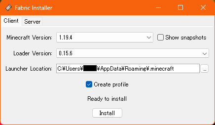

※背景画像はKappaシェダーを使用して撮影されました
※背景は特に関係ない画像です
fhrk_'s Advance MC
このModは現在開発中です。今はほぼ何もありません。
対応バージョン
- Minecraft 1.19.4
- Fabric 0.15.6
インストールガイド
まずFabricをインストールします
(CurseForge等のランチャーの使用もできます)
以下のスクリーンショットと
同じ状態で「Install」を
クリックすれば大丈夫です

次にWindowsキー+Rを押して
ファイル名を指定して実行を
表示させます
%appdata%\.minecraft\mods
以上をボックスに入力し、
エンターキーで開きます
ダウンロードしたAdvanceMCの
jarファイルをコピーします。
Fabric APIも同様に
インストールして下さい
関連リンク
このプロジェクトはMinecraft非公式で、Mojang Studioとは一切関係がございません
Minecraftは米国及び各国で登録されたマイクロソフト社の登録商標です
その他当サイト内で使用されている登録商標は各社の登録商標です。
その他当サイト内で使用されている登録商標は各社の登録商標です。
This work is licensed under Attribution-ShareAlike 4.0 International